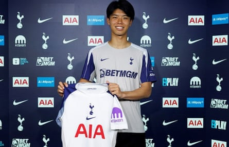

Leeds are inching closer to signing the midfielder Sean Longstaff from Newcastle for an initial £10m, potentially rising to £12m. The 27-year-old, who joined Newcastle’s academy almost 20 years ago, lost his first-team place to Sandro Tonali last season. With one year on his contract, the clubs have spent recent weeks discussing a long-mooted move.
A transfer that will be registered as pure profit for Newcastle under the Premier League’s spending rules, given Longstaff’s homegrown status, appears imminent. With Longstaff keen on relocating to Leeds, personal terms will not represent a problem for a player whose experience should help Leeds adapt to the top tier after promotion.
While Newcastle’s pursuit of the Burnley goalkeeper James Trafford continues – the fee remains a sticking point – Eddie Howe is close to welcoming one of his top summer targets, the Nottingham Forest right-winger Anthony Elanga .
With the final touches being applied to Elanga’s £55m move, the Swede is expected to undergo a medical in the next 48 hours and be reunited with his international teammate Alexander Isak.
Newcastle remain in the market for a right-sided central defender and retain an interest in the Atalanta 21-year-old Giorgio Scalvini, who impressed in Serie A last season.
With Callum Wilson having departed, a striker to understudy Isak is required and Newcastle have been offered Dominic Calvert-Lewin, who has left Everton . Although Howe has previously expressed interest in signing Calvert-Lewin, a move is unlikely until later in the transfer window.
Kota Takai has completed a £5m move to Tottenham from Kawasaki Frontale in Japan to become the first signing of the Thomas Frank era. The 20-year-old centre-half, who is 6ft 3in and known for his strength, speed and comfort on the ball, has signed a five-year contract.
Kota Takai, the £5m Spurs signing, is known for his strength, speed and comfort on the ball.Photograph: Tottenham Hotspur
Takai swells the club’s extensive options in the middle of the backline, which start with the first-choice partnership from last season – Cristian Romero and Micky Van de Ven. Frank will also be able to call upon Kevin Danso, Radu Dragusin and Luka Vuskovic, the 18-year-old who has joined for £12m from Hajduk Split.
Romero’s future at Spurs is unclear. The Argentina international, one of the vice-captains under Frank’s predecessor, Ange Postecoglou, has made no secret of his desire to play in Spain and he has been openly courted by Atlético Madrid. Spurs, though, would not sell for less than £60m, a figure that may prove beyond Atlético. Romero is under contract to 2027.
Takai came through the youth ranks at Kawasaki Frontale, the club that produced the Brighton winger Kaoru Mitoma, making his debut for them as a 17-year-old. He won the Japanese Cup in 2023, was named as the J-League’s best young player in 2024 and this year helped his club to reach the AFC Champions League final – which they lost to Ivan Toney’s Al-Ahli.
Takai played in every minute of the knockout rounds and won plaudits in the semi-final victory over Al-Nassr when he kept Cristiano Ronaldo and Jhon Durán quiet. Takai made his Japan debut last September and has four caps.
Spurs remain in talks with West Ham over the winger Mohammed Kudus after having an opening offer of £50m turned down.